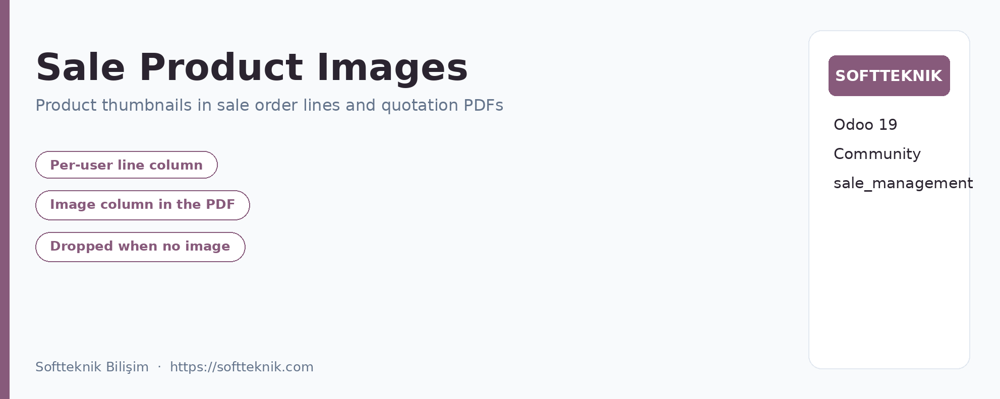
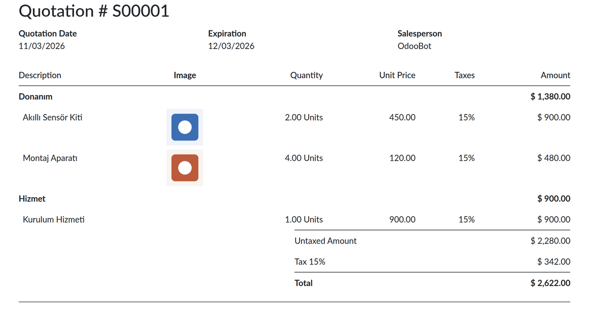

Sale Product Images
Product thumbnails in the sale order line list and in the printed quotation PDF.
What it does
- Order lines: an image column on the sale order form. The column
is on by default and each user hides or shows it from the list header
(
optional="show") – no global setting involved.
- PDF report: an image column on quotations and sale orders, enabled
with one switch in Sales › Configuration › Settings.
- No empty column: when no line carries an image the report drops the
column instead of printing an empty one.
- Print safe: report images are re-encoded to JPEG on a white
background, so transparent PNGs and wide pictures print without artefacts.
- No extra install: needs
sale_management only; the
encoding uses Pillow, which every Odoo installation already ships.
- Turkish translation included (
tr.po).
Printed quotation

Rendered from a real Odoo 19 Community database: the image column sits between the
description and the quantity, and section rows keep their totals aligned.
Configuration
- Order lines – nothing to configure; toggle the column from the
list header.
- PDF reports – Sales › Configuration ›
Settings, enable Show Product Image in PDF Reports.
Notes
- Odoo 19 Community Edition; no Enterprise-only dependency.
- The customer portal page keeps its own product table, so the on-screen portal view
has no image column; the PDF download does.
- Parameter:
sale_product_image.show_image_in_report.
Softteknik Bilişim ·
softteknik.com
· softteknik@softteknik.com · LGPL-3